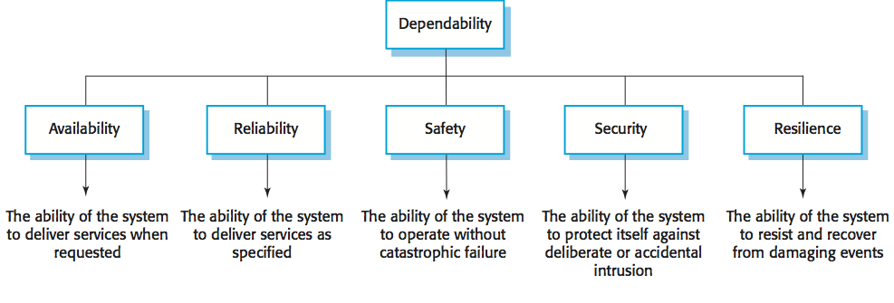
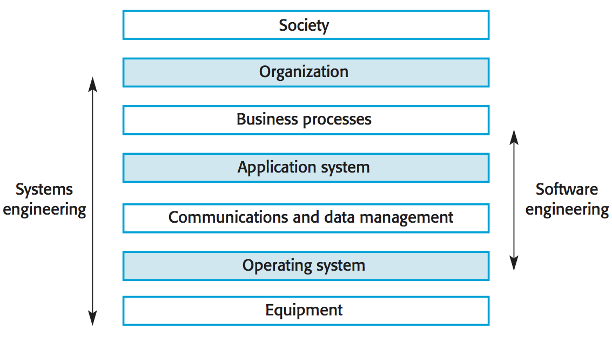

CS 410/510 - Software Engineering
System Dependability
Reference: Sommerville, Software Engineering, 10 ed., Chapter 10
The big picture
For many computer-based systems, the most important system property is the dependability of the system. The dependability of a system reflects the user's degree of trust in that system. It reflects the extent of the user's confidence that it will operate as users expect and that it will not 'fail' in normal use. Dependability covers the related systems attributes of reliability, availability and security. These are all inter-dependent.
System failures may have widespread effects with large numbers of people affected by the failure. Systems that are not dependable and are unreliable, unsafe or insecure may be rejected by their users. The costs of system failure may be very high if the failure leads to economic losses or physical damage. Undependable systems may cause information loss with a high consequent recovery cost.
Causes of failure:
Dependability properties
Principal properties of dependability:

Principal properties:
Other properties of software dependability:
Many dependability attributes depend on one another. Safe system operation depends on the system being available and operating reliably. A system may be unreliable because its data has been corrupted by an external attack. Denial of service attacks on a system are intended to make it unavailable. If a system is infected with a virus, you cannot be confident in its reliability or safety.
How to achieve dependability?
Dependability costs tend to increase exponentially as increasing levels of dependability are required because of two reasons. The use of more expensive development techniques and hardware that are required to achieve the higher levels of dependability. The increased testing and system validation that is required to convince the system client and regulators that the required levels of dependability have been achieved.
Socio-technical systems
Software engineering is not an isolated activity but is part of a broader systems engineering process. Software systems are therefore not isolated systems but are essential components of broader systems that have a human, social or organizational purpose.
There are interactions and dependencies between the layers in a system and changes at one level ripple through the other levels. For dependability, a systems perspective is essential.

Emergent properties
Emergent properties are properties of the system as a whole rather than properties that can be derived from the properties of components of a system. Emergent properties are a consequence of the relationships between system components. They can therefore only be assessed and measured once the components have been integrated into a system.
Some examples of emergent properties:
| Property | Description |
| Volume | The volume of a system (the total space occupied) varies depending on how the component assemblies are arranged and connected. |
| Reliability | System reliability depends on component reliability but unexpected interactions can cause new types of failures and therefore affect the reliability of the system. |
| Security | The security of the system (its ability to resist attack) is a complex property that cannot be easily measured. Attacks may be devised that were not anticipated by the system designers and so may defeat built-in safeguards. |
| Repairability | This property reflects how easy it is to fix a problem with the system once it has been discovered. It depends on being able to diagnose the problem, access the components that are faulty, and modify or replace these components. |
| Usability | This property reflects how easy it is to use the system. It depends on the technical system components, its operators, and its operating environment. |
Two types of emergent properties:
Regulation and compliance
Many critical systems are regulated systems, which means that their use must be approved by an external regulator before the systems go into service. Examples: nuclear systems, air traffic control systems, medical devices. A safety and dependability case has to be approved by the regulator. Therefore, critical systems development has to create the evidence to convince a regulator that the system is dependable, safe, and secure.
Regulation and compliance (following the rules) applies to the socio-technical system as a whole and not simply the software element of that system. Safety-related systems may have to be certified as safe by the regulator. To achieve certification, companies that are developing safety-critical systems have to produce an extensive safety case that shows that rules and regulations have been followed. It can be as expensive develop the documentation for certification as it is to develop the system itself.
Redundancy and diversity
Redundancy: Keep more than a single version of critical components so that if one fails then a backup is available.
Diversity: Provide the same functionality in different ways in different components so that they will not fail in the same way.
Redundant and diverse components should be independent so that they will not suffer from 'common-mode' failures.
Process activities, such as validation, should not depend on a single approach, such as testing, to validate the system. Redundant and diverse process activities are important especially for verification and validation. Multiple, different process activities the complement each other and allow for cross-checking help to avoid process errors, which may lead to errors in the software.
Dependable processes
To ensure a minimal number of software faults, it is important to have a well-defined, repeatable software process. A well-defined repeatable process is one that does not depend entirely on individual skills; rather can be enacted by different people. Regulators use information about the process to check if good software engineering practice has been used. For fault detection, it is clear that the process activities should include significant effort devoted to verification and validation.
Dependable process characteristics:
Dependable process activities
Dependable software often requires certification so both process and product documentation has to be produced. Up-front requirements analysis is also essential to discover requirements and requirements conflicts that may compromise the safety and security of the system. These conflict with the general approach in agile development of co-development of the requirements and the system and minimizing documentation. An agile process may be defined that incorporates techniques such as iterative development, test-first development and user involvement in the development team. So long as the team follows that process and documents their actions, agile methods can be used. However, additional documentation and planning is essential so 'pure agile' is impractical for dependable systems engineering.